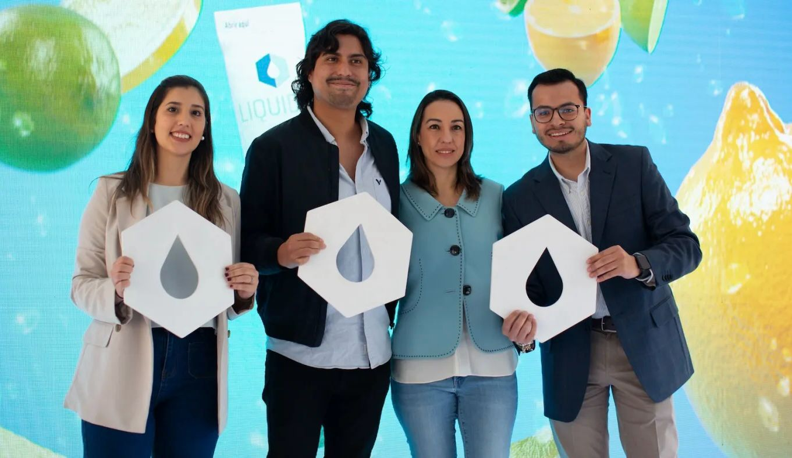
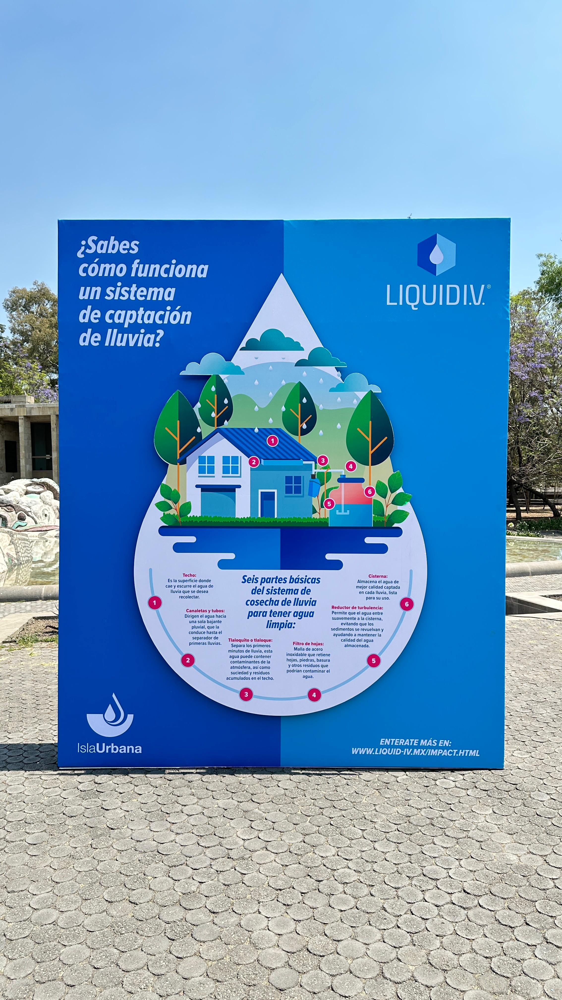

Liquid I.V. ha formado una alianza estratégica con Isla Urbana para llevar a cabo proyectos de captación de agua de lluvia en diversas comunidades de Oaxaca. Esta colaboración tiene como objetivo principal mejorar el acceso al agua potable en áreas rurales, donde la disponibilidad de este recurso es limitada. A través de esta iniciativa, se beneficiarán tanto escuelas como hogares locales, brindándoles no solo el acceso a agua limpia y segura, sino también capacitación en técnicas de captación, almacenamiento y manejo del agua.
Además, se fomentará la gestión comunitaria, involucrando a los habitantes en el proceso y empoderándolos para que continúen implementando soluciones sostenibles a largo plazo. Esta alianza subraya el compromiso de ambas organizaciones con la sostenibilidad y el bienestar comunitario, contribuyendo a la construcción de un futuro más resiliente frente a los desafíos del cambio climático y la escasez de recursos hídricos.
En el Día Mundial del Agua, una conmemoración que aborda la crisis mundial del agua, Liquid I.V., la marca número 1 de electrolitos en Estados Unidos, se ha fijado la meta de contribuir al acceso de este preciado recurso a 2 millones de personas para 2026, reconociendo que todas las personas tienen derecho al acceso, disposición y saneamiento de agua.
Gracias a las contribuciones de los mercados estadounidenses e internacionales, Liquid I.V. invirtió más de 4 millones de dólares en subvenciones; apoyando la labor de 18 organizaciones y ampliando el acceso al agua potable a más de 800,000 personas en todo el mundo. Liquid I.V. donará anualmente más del 1% de sus ingresos globales a iniciativas sostenibles como el acceso al agua potable. Esta es la primera vez que mercados internacionales participarán en los esfuerzos de la marca.
“Sabemos que la hidratación transforma vidas, por ello, en Liquid I.V. queremos ser parte de la solución. Priorizamos alianzas con organizaciones líderes en agua, como Isla Urbana, para promover soluciones innovadoras que ayuden a las comunidades a proteger tanto su agua como su futuro”, destaca Lila López Negrete, Directora General de la Unidad de Negocio de Belleza y Bienestar en Unilever México.
Liquid I.V. México colabora con Isla Urbana, una organización con más de 15 años de experiencia en el diseño, ejecución y seguimiento de proyectos de captación de lluvia. Esta colaboración apoyará la implementación estratégica de sistemas de captación de lluvia en diversas comunidades de Oaxaca. El proyecto se llevará a cabo de enero de 2025 a enero de 2026 y beneficiará a 700 personas y recolectará más de 1 millón 200 mil litros de agua de lluvia.
“Creemos firmemente que la instalación de sistemas de captación de agua de lluvia contribuirá a la resistencia hídrica y a la conservación del agua en esta zona y gracias a la colaboración entre Liquid I.V. e Isla Urbana, apoyaremos a la recolección de agua potable en las comunidades de San Nicolás Yaxe y San José Tenango en Oaxaca”, comenta Simón Sánchez, coordinador de comunicación de Isla Urbana.
Este proyecto incluye la instalación de sistemas de captación de lluvia en escuelas, facilitando agua potable a centros que sufren escasez. Además, se apoyará a la comunidad escolar mediante capacitaciones, formación técnica y educación medioambiental basada en una metodología participativa que fomente la adopción y uso del agua de lluvia, así como el fortalecimiento de una cultura del agua sustentable.
En Oaxaca, solo 29.2% de las viviendas tienen acceso a agua dentro de su hogar, lo que indica que una gran parte de la población enfrenta dificultades para acceder a este recurso. Según datos de la Comisión Nacional del Agua (Conagua), 368 de los 570 municipios de Oaxaca se encuentran afectados por la sequía, con 171 clasificados en un grado severo y 43 enfrentando niveles extremos de aridez.
El sistema de captación residencial en San Nicolás Yaxe, Oaxaca, consistirá en la instalación de 10 sistemas de captación de lluvia en viviendas, cada uno con una capacidad de almacenamiento de 5,000 litros. La iniciativa busca aliviar los costos económicos y el tiempo dedicado a la obtención de agua para 10 familias, y se estima que permitirá captar alrededor de 255,500 litros de agua de lluvia al año.
“Cumpliremos las metas a través de nuestros programas para educar y sensibilizar a la personas más necesitadas añadió Simón”
Por otra parte, en San José Tenango, donde solo el 10.40% de los hogares cuentan con acceso a servicios públicos, se instalarán cinco sistemas comunitarios de captación de lluvia en viviendas y cinco en escuelas mazatecas, con capacitación en mantenimiento, talleres educativos y seguimiento del sistema, gestionados por directivos, padres de familia y estudiantes.
Una de las metas de la alianza entre Liquid I.V. e Isla Urbana será contribuir a mejorar la seguridad hídrica en comunidades vulnerables en Oaxaca, facilitando el acceso a fuentes de agua seguras y sustentables. Cada sistema proveerá agua potable purificada según las normativas sanitarias mexicanas. Además, se fomentará la educación ambiental, sensibilizando a las comunidades, especialmente a los estudiantes, sobre la importancia de la captación de lluvia.
“Desde 2018, el programa Escuelas de Lluvia ha sido un pilar fundamental de Isla Urbana, mejorando significativamente la seguridad hídrica y el entorno educativo de miles de estudiantes, docentes y comunidades”, añadió Simón.
La participación comunitaria será clave en la instalación, mantenimiento y gestión de los sistemas. Se desarrollará infraestructura sustentable, adaptada a las necesidades de cada comunidad, y se impulsará el desarrollo socioeconómico al reducir el tiempo y los costos asociados a la obtención de agua potable, permitiendo que las comunidades se enfoquen en otras actividades para su desarrollo.
Mediante esta alianza, Liquid I.V. e Isla Urbana buscan dar un paso hacia un futuro sostenible y justo. Su objetivo es llevar agua potable a las comunidades más necesitadas de Oaxaca, abriendo el camino hacia un mundo más equitativo.
Para más información revisar la página de www.islaurbana.org y las redes sociales @liquidivmx @isla_urbana